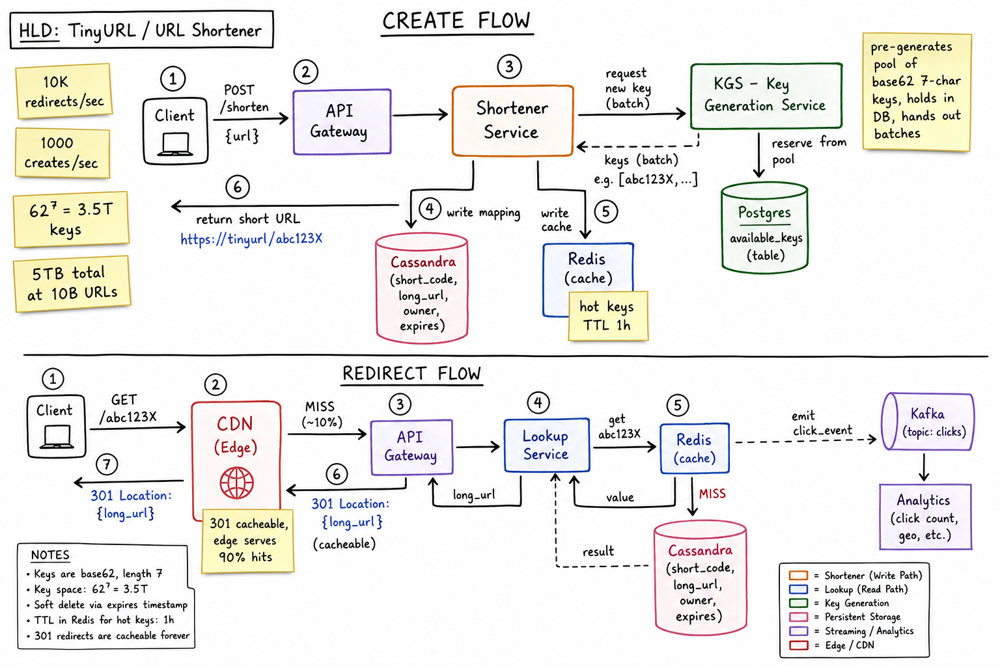
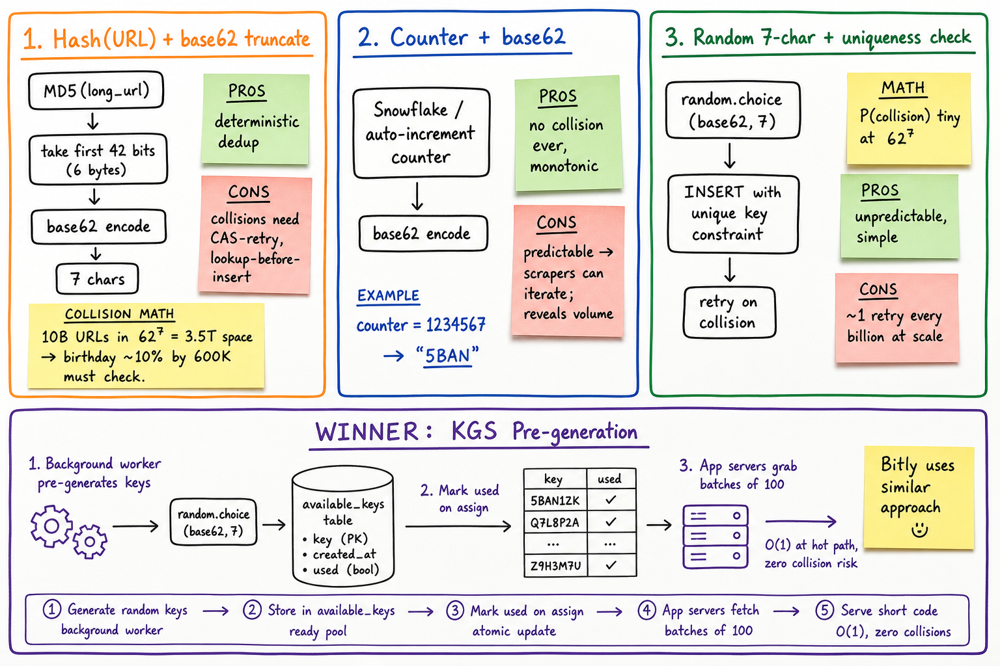
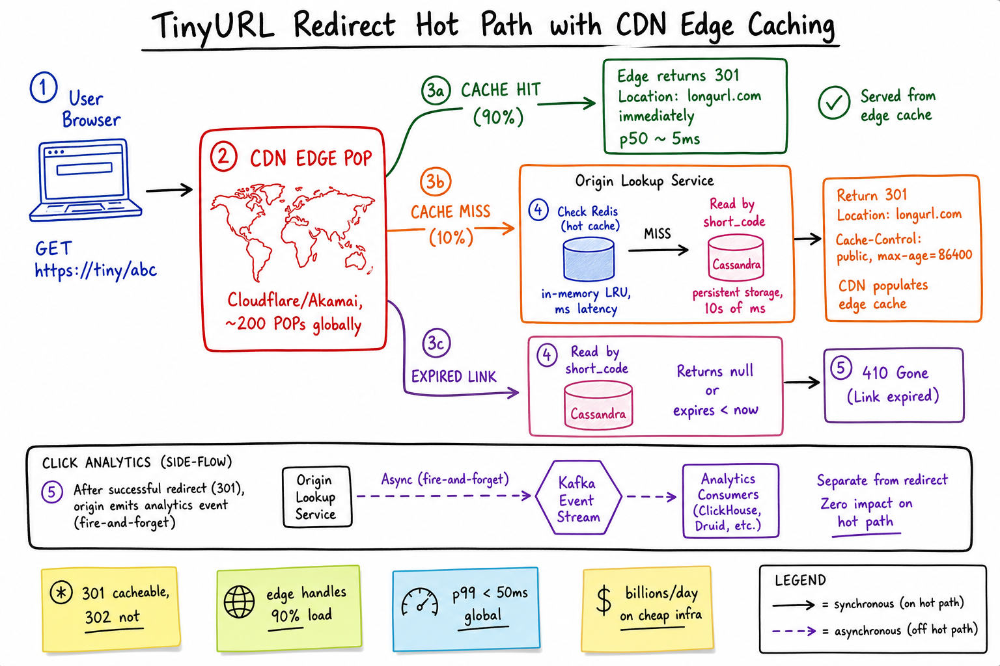

TinyURL / URL Shortener // HLD
The classic 101 system design — but every detail matters. 10B URLs lifetime, 1K shortens/sec, 10K redirects/sec, 5TB total. Key Generation Service (KGS) pre-mints base62 7-char codes; redirects are CDN-cached 301s on a hot path; clicks fire-and-forget into Kafka.

Whiteboard HLD — two flows. CREATE: client POST /shorten, Shortener Service requests a batch of pre-minted keys from the KGS (Key Generation Service, which holds an available_keys pool in Postgres), writes (short_code, long_url, owner, expires) to Cassandra + Redis cache, returns short URL. REDIRECT: GET /abc123X hits CDN first (90% hit, serves 301 immediately); on miss, Lookup Service reads Redis → Cassandra fallback → returns 301. Click event fired async into Kafka → Analytics. 62^7 = 3.5T keyspace; 5TB total at 10B URLs.
01 — Requirements
Functional
- Shorten a long URL into a short code (~6-8 chars)
- Redirect short URL → original long URL with HTTP 301
- Custom aliases (user picks
/promo-2026) - Optional expiration (TTL) per short URL
- Per-link analytics: click count, geo, referrer, device
- (Optional) User accounts with link management
Non-Functional
- Read-heavy: 100x more redirects than creates (10K vs 1K /sec)
- Low latency redirect: p99 < 50ms global (CDN-cached most of it)
- High availability: 99.99%; redirects must always work even during partial outages
- Durability: never lose a mapping (5 years archival)
- Unique codes: no collisions in (short_code → long_url) mapping
- Unpredictable URLs: can't be sequentially scraped (security/abuse)
01a — Core Entities
| Entity | Key Fields | Notes |
|---|---|---|
| ShortLink | short_code (PK, base62, 7 chars), long_url, owner_id?, created_at, expires_at?, is_active | The core record. Soft-delete via is_active or expires_at. |
| User | user_id, email, plan (FREE/PAID), api_key | Plan gates rate limits and custom aliases. |
| Custom Alias | alias (PK), short_code, reserved_at | Subset of ShortLink where user picked the code; uniqueness via DB constraint. |
| KGS Pool Entry | key (PK, base62), generated_at, used (bool), assigned_to_node? | Pre-minted keys; transitioned to used on assign. |
| Click Event | (short_code, ts, ip, ua, referrer, geo) | Append-only stream in Kafka; aggregated in ClickHouse / Druid for analytics. |
| Reserved Word | word (PK) | Blocklist (admin, api, login, etc.) and brand-protection list. |
| Safe-Browsing Verdict | (long_url, verdict, checked_at) | Cached results from Google Safe Browsing / VirusTotal. |
01b — API Design
Shorten
POST /shorten
Idempotency-Key: ...
body: { long_url, custom_alias?, expires_at? }
-> 201 { short_url: "https://tiny.x/abc123X",
short_code, expires_at }
errors: 400 (invalid URL), 409 (alias taken), 451 (blocked)
Redirect (the hot path)
GET /{short_code}
-> 301 Location: {long_url}
Cache-Control: public, max-age=86400
(or 410 Gone if expired, 404 if unknown, 451 if malicious)
Management & analytics
GET /links/{short_code} # owner-only metadata
DELETE /links/{short_code}
GET /links/{short_code}/stats
?from=...&to=...
-> { total_clicks, by_country, by_referrer, by_day }
GET /links?owner_id=...&cursor=... # paginated list
301 vs 302: 301 (permanent) is CDN-cacheable and lets browsers cache; cheap at scale. 302 (temporary) is required if you need every click counted accurately, but it kills CDN caching. Choice = analytics-precision vs cost; most shorteners pick 301 with async logging.
02 — Estimation
Time horizon: 5 years
URLs total: 10B
URLs created/sec avg: 10B / (5 * 365 * 86400) ~= 63/sec
+ safety margin -> assume 1000/sec target
Redirects/sec: 10K avg, 100K peak
Read:write ratio: ~100:1
Short code length:
base62 (a-zA-Z0-9) = 62 chars
62^6 = 56B -- enough for 10B but tight
62^7 = 3.5T -- comfortable; gives long runway
-> pick 7-char codes
Storage:
Each record: short_code(7) + long_url(~500B) + meta(~50B) ~= 560B
10B * 560B = ~5 TB primary data
+ indexes, replicas (RF=3) → ~20 TB total
Click events archive: dependent on click volume; ClickHouse compressed
Cache (Redis):
Hot 1% of links covers ~80% of traffic (Pareto)
100M hot keys * 600B = 60 GB hot
Redis Cluster ~3 nodes with RF=2
KGS pool:
Pre-mint ~1B keys initially; refill in batches03 — Why It's Hard
- Uniqueness at scale: generating 1B+ short codes without collisions is harder than it looks.
- Hot path latency: redirect must be near-zero latency — CDN-cacheable is non-negotiable.
- Unpredictability: sequential keys reveal volume + invite scraping (security/abuse).
- Abuse: shorteners are a phishing/spam vector; safe-browsing must run at submit and periodically.
- Click analytics must not slow the hot path; fire-and-forget into a stream.
- Custom aliases introduce uniqueness contention and reserved-word filters.
- Expiration / soft-delete — 410 Gone vs 404 vs CDN-staleness coordination.
04 — Architecture
Client Client (redirect)
| |
v v
POST /shorten GET /{short_code}
| |
v v
+--------------+ +----------------+
| API Gateway | | CDN edge POP |
+--------------+ | (Cloudflare/ |
| | Akamai, 200+ |
v | POPs) |
+--------------+ +----------------+
| Shortener | | (90% hit)
| Service | | cache MISS
+--------------+ v
| \ +----------------+
| get | | Lookup Service |
| batch v +----------------+
| +-----+ |
| | KGS | v
| +-----+ +-----------+
| | | Redis |
v v | (hot LRU) |
+---------------+ +-----------+ +-----------+
| Cassandra | | Postgres | | miss
| (short_code | | available_| v
| -> long_url) | | keys | +------------+
+---------------+ +-----------+ | Cassandra |
^ +-----------+
|
+-------------+
| Redis cache | --<-- write-through
+-------------+
Redirect side-effect: emit click event to Kafka -> ClickHouse
Safe-browsing: async worker; verdict cached in Redis
05 — Short-Code Generation: 3 Approaches

Three classic strategies compared. (1) Hash(URL)+base62 gives deterministic dedup but needs collision handling. (2) Counter+base62 has zero collisions but is sequentially predictable. (3) Random+uniqueness-check is unpredictable but pays ~1 retry per billion. Winner for production: KGS pre-generation — an offline worker pre-mints random codes into a pool, app servers grab batches at O(1) on the hot path.
| Approach | How | Pros | Cons |
|---|---|---|---|
| 1. Hash(URL) + truncate | MD5(long_url) → first 42 bits → base62 | Deterministic dedup (same URL => same code, save storage) | Collisions inevitable at scale; need lookup-before-insert; bad latency on hot path |
| 2. Counter + base62 | Snowflake / monotonic counter → base62 | Zero collisions; monotonic | Predictable: scrapers can iterate /0, /1, /2...; reveals volume |
| 3. Random + uniqueness check | random.choice(base62, 7) + INSERT with UNIQUE constraint; retry | Unpredictable; simple | Retries grow as keyspace fills; not deterministic |
| 4. KGS pre-generation (winner) | Worker pre-mints random codes into pool DB; app grabs batches | O(1) hot path, zero collision risk, unpredictable, decoupled | Needs a pool service; coordination overhead at first |
06 — KGS Pattern (Key Generation Service)
The KGS owns key generation as a separate concern from the application.
used=false rows.available_keys(key PK, generated_at, used, assigned_to_node). Could be a Redis set instead; Postgres gives crash-safety.kgs.next_batch(100); KGS marks 100 rows used and returns them (single atomic UPDATE).used=true but never written into Cassandra). Acceptable: keyspace is 3.5T, leaking 100s is irrelevant.The KGS pattern transforms key generation from "do it at hot-path under contention" to "do it offline, hand out batches". The hot-path code does O(1) pop from a local buffer.
Sizing the pool
create rate: 1000/sec sustained batch size: 100/server nodes: 20 -> 2000 keys held in app memory at any time KGS refill: trigger at < 1M pool size; refill to 10M keyspace: 62^7 = 3.5T -- even at 1B keys/year, we have ~3500 years runway
07 — Storage
Why Cassandra (or DynamoDB)
- Workload = point lookups by short_code (PK). No range scans, no joins.
- 10B rows; needs horizontal sharding by partition key (short_code).
- LSM perfect for write-once, read-many.
- RF=3, multi-DC for global low-latency reads (eventual consistency is fine).
Cache layout
Redis key: url:{short_code} -> long_url
TTL: 1 hour (refreshed on access)
Eviction: LRU
Pre-warm: background job populates top-N by click count nightly
Why not just Postgres?
At 10B rows, Postgres B-tree gets unhappy. Could shard manually, but you're now reinventing Cassandra's partitioning. For URL shortener, KV is the right shape.
See Cassandra deep dive, Redis, Sharding.
08 — Redirect Hot Path

User → CDN edge POP. 90% hit: edge returns 301 Location immediately, p50 ~5ms. 10% miss: edge fetches from origin Lookup Service → Redis (hot LRU) → Cassandra (cold). 301 returned with Cache-Control: public, max-age=86400 so CDN populates. Expired link → 410 Gone. Click analytics emit fire-and-forget to Kafka, completely off the hot path so they never block the redirect.
The path
- Browser request GET
tiny.x/abc123X. - CDN edge: if cached, return 301 Location header. ~5ms global p50.
- On miss: edge forwards to origin Lookup Service.
- Lookup Service reads Redis (~1ms). On miss, reads Cassandra (~10ms).
- Returns 301 with
Cache-Control: public, max-age=86400. CDN populates edge cache. - If expired: 410 Gone,
Cache-Control: no-store(don't cache the expiry). - If malicious (Safe Browsing verdict bad): 451 Unavailable for Legal Reasons.
Why 301 not 302
- 301 is browser-cacheable; many users never even hit the CDN twice for the same link.
- 302 forces every click to round-trip — expensive at billions/day.
- Lose precise click counting? Use async click logging instead (see below).
09 — Click Analytics
Analytics must never slow the redirect.
- Lookup Service emits
click_eventto Kafka asynchronously after responding with 301. - Event payload:
(short_code, ts, ip_hash, ua, referrer, geo_from_ip, device_type). - Consumers: ClickHouse / Druid for OLAP; aggregation jobs roll up to per-day buckets.
- API
GET /links/{code}/statsqueries the OLAP store. - Hot counter (today's clicks) cached in Redis with
INCR counts:{code}:{day}for fast small queries.
See Ad Click Aggregator for the same pattern at higher scale (Lambda architecture, Flink, ClickHouse).
10 — Custom Aliases
- User submits desired alias (e.g.
/promo-2026). - Validation: length, character set, no reserved words (
admin,api,login). - Uniqueness via DB constraint — INSERT with UNIQUE; on conflict, return 409.
- Reserved namespace: 2-letter codes, brand names, profanity reserved at boot.
- Paid plans get longer reservation windows and bulk-create.
- Custom aliases live in the same Cassandra table as KGS-generated codes — same lookup path, no extra logic on redirect.
11 — Abuse & Safety
- Safe Browsing check on submit: POST /shorten triggers async lookup against Google Safe Browsing / VirusTotal; verdict cached.
- Periodic re-scan: URLs flipped to malicious after the fact (post-compromise) — nightly sweeper rechecks.
- Bad-verdict response: redirect returns 451 + warning interstitial.
- Rate limits: per IP, per user, per API key. Token-bucket in Redis. See Rate Limiter cheatsheet.
- Spam detection: bursty creates from one source, low engagement on resulting links → shadow-ban + manual review.
- Phishing report endpoint: external reports of bad URLs → queue + human review.
- DMCA / legal takedowns: soft-delete + 451 response; store reason in audit log.
12 — Scaling
- CDN is the load-bearing layer. 90% of redirects never touch our origin.
- Cassandra sharded by short_code (partition key); naturally distributes — no hot partition.
- Redis Cluster for hot key cache; sharded by short_code; ~60GB total at 100M hot keys.
- KGS can be a single small service (offline pre-mint) or sharded by hash-prefix if it ever becomes a bottleneck.
- Multi-region: Cassandra multi-DC replication; Redis per-region; CDN is naturally global.
- Stateless Lookup & Shortener Services scale horizontally behind a load balancer.
- Kafka for click stream; horizontally partitioned by short_code.
- Cold storage for archived clicks > 90 days → S3 + Athena/Presto.
13 — Edge Cases
- Same long URL shortened twice: two different codes (unless we explicitly dedupe via hash lookup at submit, which is opt-in).
- Expired link still in CDN: 301 with short max-age (e.g. 60s near expiry) limits staleness; or use 302 for soon-to-expire links.
- Deleted link still cached: CDN purge API call on delete, or accept up to TTL window of staleness.
- Custom alias collision with reserved word: 409 with reason; suggest alternatives.
- KGS exhausted: alarm + scale up generator workers; fall back to random+check at low rate.
- Long URL longer than 2KB: reject (HTTP URL practical limit) — force user to clean up tracking params.
- Redirect loop (short URL points to itself or to another shortener that points back): detect at submit (resolve up to N hops); block if loop.
- Cassandra hot replica down: read from replica; eventual is fine for redirects.
- Region outage: CDN keeps serving cached redirects; new submits fail in that region.
14 — Real-World Equivalents
| System | Notes |
|---|---|
| Bitly | Pioneered the modern shortener; uses random+check + heavy CDN; tons of analytics product |
| TinyURL | The original; simple random+check |
| goo.gl (Google) | RIP. Used hashing of URL with collision retry |
| t.co (Twitter) | Per-tweet auto-wrap; analytics + safety scanning in-house |
| lnkd.in (LinkedIn) | Similar shape; deep integration with profile graph |
| YouTube's youtu.be | Counter-based codes; same product team controls long & short, so simpler |
| Internal corporate shorteners | Often just Postgres + Redis; volume is < 1M URLs / day; the architecture above is overkill |
15 — Interview Q&A
How long should the short code be?
Hash, counter, or random — what generation strategy?
How does the KGS work and how big should the pool be?
available_keys with used=false. App servers atomically claim batches of ~100 keys at a time (single UPDATE marks them used and returns them), then pop keys from local memory on every shorten. Refill threshold: when pool drops below e.g. 1M unused keys, refill to 10M. Even at 1B keys consumed/year, 3.5T keyspace is >3000 years of runway.301 or 302 for the redirect?
How do you serve redirects in <50ms globally?
Where does click analytics live?
click_event to Kafka fire-and-forget after returning the 301. Consumers write to ClickHouse / Druid for OLAP queries. Hot counter (today's clicks) maintained in Redis with INCR for tiny-query latency. Full pattern is the same as the Ad Click Aggregator at higher scale.How do you handle custom aliases?
How do you stop the service from being used for phishing?
What's the storage footprint?
How does expiration work?
expires_at field. On redirect, Lookup Service checks; if expired, returns 410 Gone with Cache-Control: no-store so CDN doesn't cache the gone response. For TTL-cached entries near expiry, we serve a shorter max-age in the 301 response to bound CDN staleness. Sweeper cleans up expired rows nightly.